Contenido
[ocultar]Última Hora
Viernes 1 de Agosto
- IMPORTANTE Hoy es el ultimo dia de taller y por la noche tendremos competicion del mogollon, ¡no podeis faltar!
Jueves 31 de Julio
- IMPORTANTE Se ha corregido una errata en la funcion LeerLDR del archivo libreria_skybot.c
- Hay que ir pensando en la estrategia para ganar el concurso del
Mogollón
- El objetivo de hoy es entender todos los ejemplos desarrollados con la libreria skybot y modificarlos para realizar vuestros propios algoritmos y conjuntos de acciones.
- Reto: Modificar el ejemplo de siguelineas.c para robustecerlo y presentarlo a la prueba de robo-trackers.
Miércoles 30 de Julio:
- Hay alambre grueso disponible para la "antena" de la LDR
Martes 29 de Julio:
- Actualizados los ejemplos de la libreria Skybot para usar los sensores 3 y 4 como siguelineas
- Actualizada la librería fácil para activar la funcionalidad de la LDR.
- Necesitamos la localiazión de vuestro puesto. Mandar por mail a Javier Valiente
- El concurso del Mogollón es el viernes por la noche. Consejo, terminar la primera y segunda sesión hoy.
Documentación
| 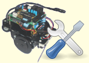 |
| Taller Skybot |
Instructores
- Javier Valiente : bipo_16@hotmail.com
- Andrés Prieto-Moreno
- Ricardo Gómez
Bitácora
Martes 29 Julio
Hoy se han realizado la primera y segunda sesión del taller, es decir han terminado con la estructura lista para ser programada. La razón ha sido que el concurso del
Mogollón se ha adelantado del sábado al viernes
| 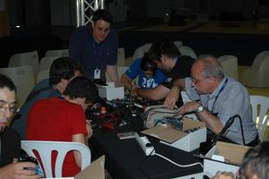
Participantes construyendo la estructura |
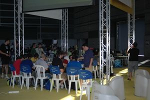
Vista de la zona del taller |
| 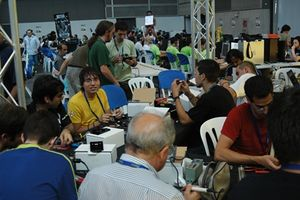
General |
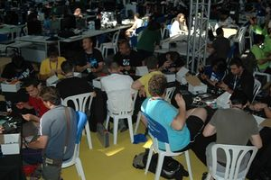
General |


Miércoles 30 y Jueves 31 de Julio
Durante el primer día se han instalado el software en los PC y se han realizado los primeros programas.
Durante el segundo día se ha avanzado en la programación. Cada grupo lo ha ido haciendo desde su puesto y ha contado con la ayuda de los instructores.
| 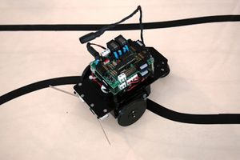
Robot Skybot montado y listo para programar |
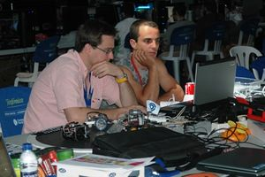
Andrés atendiendo a un alumno del taller |


Viernes 1 de Agosto
Hoy se han últimado los detalles para el concurso del
Mogollón
y a última hora se ha celebrado el concurso.
| 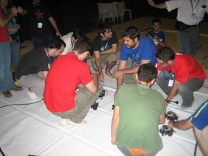
Concursantes listos para participar en el Mogollón |
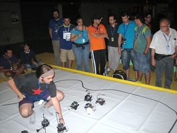
Javier preparando el concurso del Mogollón |
| 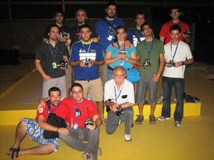
Foto final del taller |
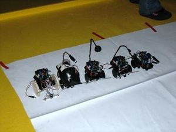
Ganadores del concurso |


Noticias
- 12/Ago/2008: Fotos del mogollón
- 8/Ago/2008: Información adicional y nuevas fotos
- 29/Jul/2008: Comenzado el taller y actualizado el bitácora
- 21/Jul/2008: Comenzada esta página